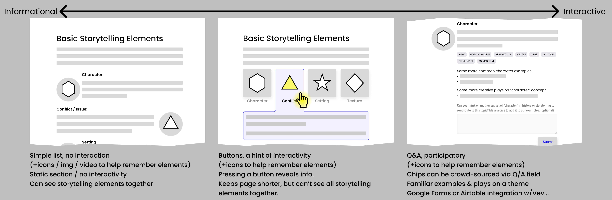

Academic Website
Amplifying the silenced narratives of history for today's pluralistic society
Public History, Storytelling, & Museums
Museums often focus on dominant perspectives; thus the need for public history, described as: “...the preservation, interpretation, and representation of historical narratives, specifically highlighting the experiences of marginalized and underrepresented peoples.”(1)
The client, a professor at St. Mary’s College, needed a way to share her research insights with other public history academics. I built a website for her that also functioned to supplement her new course offering, helping students unearth and highlight underlying relevant, richer, more inclusive narratives when crafting museum exhibitions.
1 https://www.stmarys-ca.edu/news/lisa-manters-2023-neh-award-win-public-history-and-win-students.
My Contributions
Proposed variations along schematic themes
This project tapped into skills that I learned early in my career as a residential architect: listening, communicating through themes, establishing a shared language, and avoiding jargon. I worked one-on-one to help hone a body of work that the client was passionate about.

Built an interactive website
I began with static diagrams and concepts in Figma. Rather than continuing with high-fidelity static designs for hand-off, I chose a “no-code” website builder. This way, I could demo the staging site at any point and test a variety of navigation approaches, interactions, and animated effects.
It was also important to choose an environment that permitted designer, client, and developer to work concurrently on design, content, and code. This invited participation and collaboration in ways that proved useful:
- I could clearly communicate realistic interactions to a non-technical audience
- The client could make content changes based on templates I had set up, giving her ongoing agency for her website as content changes
- The developer could override / customize behavior in a coding environment that they know, rather than having to adapt to another design tool
Takeaways
Selecting the right tools for the task
- Despite the website-builders I reviewed being described as “no-code,” some knowledge of HTML and CSS proved to be critical to learning quickly.
- I was tempted by a relatively new platform as a great opportunity to contribute to the evolution of a new product. On the flip side, the user-created tutorials, tips, and tricks did not yet exist, so I had to be patient and allow time for learning and beta-testing.

Client
Prof. Lisa Manter
User Experience
Nilpa Jhaveri
Developer
Rohan Talip